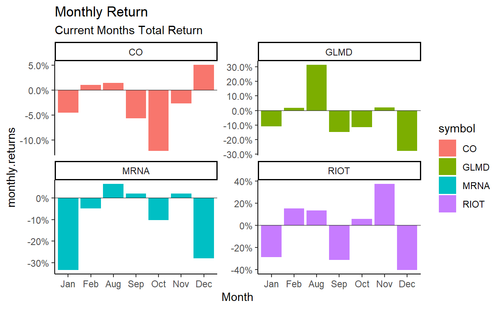
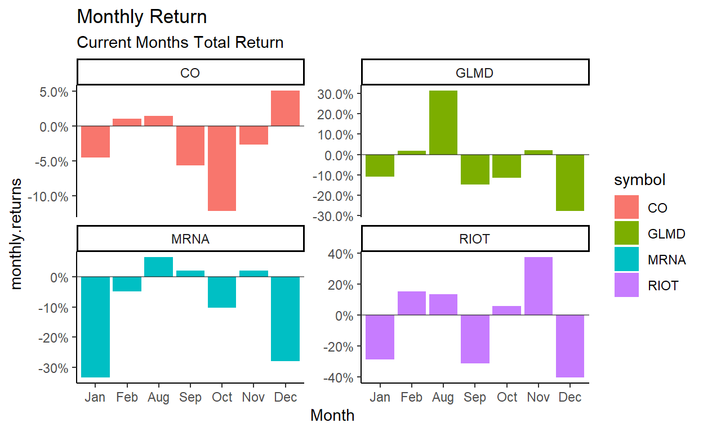
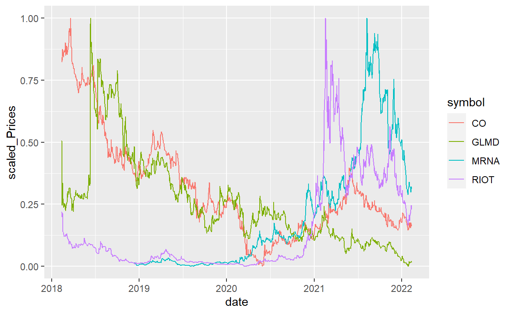

Introduction
Covid has hit the world in many strange and unexpected ways. Recently the stock market has been very volatile. Gamestop stock is rising up to 400 a share from previous shares below 10 dollars. A failing video game store, that sells hard copy video games saw prices increase exponently due to a Reddit group. There are stories about college students making millions of dollars from investing using apps like Robinhood.
Due to the ease of entering the market through free online platforms, there’s a whole new market of investors that are adding a new and unexpected force to the market.
For this paper, I am going to look into the best way to compare stocks! As there are many many different ways to compare stocks, I’m going to focus on a few key points that I find useful.
Data
Instead of using pre gathered data, I’ve decided to gather the data my self. To get up to date stock data, I’m using the package tidyquant to gather data from Yahoo Finance.
I’ve set up a vector named stocks of multiple stocks with with very different listed prices, such as Google with a current price of 2300 and MTNB (a pharmaceticul comapny) with a price of 90 cents.
ui <- fluidPage(
titlePanel("Stock Prices"),
sidebarLayout(
sidebarPanel(
selectInput("stock", "Stock Symbol:",
choices = unique(data$symbol)),
hr(),
helpText("Pick a Stock from the Predetermined List")
),
#create a spot for the plot
mainPanel(
plotOutput("StockPlot")
)
)
)
Updating Dates
When running this report, I use multiple different dates that depend on the current date. For example I am pulling initially 4 years of data starting in 2018. When looking at the data, for my daily and monthly returns, I may only care about 1 month of data or even 6 months of data. To do this, I will need to filter the date column based on my current date. To make this process easier and capable of being run at any date and pull fresh information. I’ve created date objects are are dependent on the current date. The current date is aquired using sys.date().
Mutating DATA
Right now I have the following variables: Company symobl, date, open, high, low, close, volume and adjusted price. Using Tq_transmute, I will use the adjusted price to calculate the daily, weekly and monthly returns. This will allow me to look at the % returns and be useful when comparing stocks that have such different prices. I also wanted a good way to compare stockst that have very different prices. As mentioned above, Google has a price of 2300 dollars per share, while MTNB has a price of 90 cents per share. If we were to compare the stocks side by side, we could do a free y scale for the y axis, but I would question whether that is actually a good representation.I don’t believe looking at the stocks side by side with a free scale is a fair representation of comparing stocks. We look further into that later on.
First
dailyReturns <- data %>%
group_by(symbol) %>%
tq_transmute(select = adjusted, mutate_fun = periodReturn, period = "daily", type = "arithmetic")
dailyReturns %>%
filter(date >= month1_date)%>%
summarise(AverageReturn = mean(daily.returns))%>%
ggplot()+
geom_col(aes(x = symbol, y = AverageReturn, fill = symbol))+
geom_hline(yintercept = 0, alpha =.5)+
geom_text(aes(x = symbol, y = AverageReturn, label = ((round(AverageReturn,4))*100)),vjust = 1)+
scale_y_continuous(labels = scales::percent)+
theme_classic()+
labs(title = "Average Daily Return",
subtitle = "Current Month : April 2021")

dailyReturns %>%
filter(date >= month6_date)%>%
summarise(AverageReturn = mean(daily.returns))%>%
ggplot()+
geom_col(aes(x = symbol, y = AverageReturn, fill = symbol))+
geom_hline(yintercept = 0, alpha =.5)+
geom_text(aes(x = symbol, y = AverageReturn, label = (round(AverageReturn,4))*100),vjust = -.5)+
scale_y_continuous(labels = scales::percent)+
theme_classic()+
labs(title = "Average Daily Return",
subtitle = "For the last 6 months")

MonthlyReturns <- data %>%
group_by(symbol) %>%
tq_transmute(select = adjusted, mutate_fun = periodReturn, period = "monthly", type = "arithmetic")%>%
mutate(month_1 = month(date),
Month = case_when(
month_1 == 1 ~ "Jan",
month_1 == 2 ~ "Feb",
month_1 == 3 ~ "Mar",
month_1 == 4 ~ "Apr",
month_1 == 5 ~ "May",
month_1 == 6 ~ "Jun",
month_1 == 7 ~ "Jul",
month_1 == 8 ~ "Aug",
month_1 == 9 ~ "Sep",
month_1 == 10 ~ "Oct",
month_1 == 11 ~ "Nov",
month_1 == 12 ~ "Dec"
))
#Creating Factors
MonthlyReturns$Month <- factor(MonthlyReturns$Month, levels = c("Jan", "Feb", "Mar","Apr","May",
"Jun","Jul","Aug","Sep","Oct",
"Nov","Dec"))
MonthlyReturns %>%
filter(date >= month6_date)%>%
group_by(symbol)%>%
summarise(TotalReturn = sum(monthly.returns))%>%
ggplot()+
geom_col(aes(x = symbol, y = TotalReturn, fill = symbol))+
geom_hline(yintercept = 0, alpha =.5)+
geom_text(aes(x = symbol, y = TotalReturn, label = ((round(TotalReturn,1))*100)),vjust = 1)+
scale_y_continuous(labels = scales::percent)+
theme_classic()+
labs(title = "Monthly Return",
subtitle = "6 Month Total Return")

MonthlyReturns %>%
filter(date >= month1_date)%>%
group_by(symbol)%>%
summarise(TotalReturn = sum(monthly.returns))%>%
ggplot()+
geom_col(aes(x = symbol, y = TotalReturn, fill = symbol), position = position_dodge2(width = 1, preserve = "single"))+
geom_hline(yintercept = 0, alpha =.5)+
geom_text(aes(x = symbol, y = TotalReturn, label =(round(TotalReturn,3))*100),vjust = 1)+
scale_y_continuous(labels = scales::percent)+
theme_classic()+
labs(title = "Monthly Return",
subtitle = "Current Months Total Return")

Above we can see that looking from the six month perspective, MRNA and RIOT have had large gains gains of 150% and 410% respectively. Google and Southwest (LUV) both seem to have great returns these last six months. The figure below shows the current months return. Google still has a large gain. What’s noticable is that RIOT and MRNA have large losses of 28% and 19% this last month.
yearlyReturns<- data %>%
group_by(symbol) %>%
tq_transmute(select = adjusted, mutate_fun = periodReturn, period = "yearly", type = "arithmetic")%>%
mutate(Year = year(date))
yearlyReturns
# A tibble: 60 x 4
# Groups: symbol [12]
symbol date yearly.returns Year
<chr> <date> <dbl> <dbl>
1 MSFT 2018-12-31 0.159 2018
2 MSFT 2019-12-31 0.576 2019
3 MSFT 2020-12-31 0.425 2020
4 MSFT 2021-12-31 0.525 2021
5 MSFT 2022-02-11 -0.123 2022
6 GOOG 2018-12-31 -0.0155 2018
7 GOOG 2019-12-31 0.291 2019
8 GOOG 2020-12-31 0.310 2020
9 GOOG 2021-12-31 0.652 2021
10 GOOG 2022-02-11 -0.0729 2022
# ... with 50 more rowsyearlyReturns %>%
filter(date >= "2021-01-01")%>%
group_by(symbol)%>%
rename(Yearly_Return = yearly.returns)%>%
ggplot()+
geom_col(aes(x = symbol, y = Yearly_Return, fill = symbol))+
geom_hline(yintercept = 0, alpha =.5)+
geom_text(aes(x = symbol, y = Yearly_Return, label = (round(Yearly_Return,3))*100),vjust = 1)+
scale_y_continuous(labels = scales::percent)+
theme_classic()+
labs(title = "Yearly Return",
subtitle = "Total Return in 2021")

Looping through my Stocks
I’ve decided that I also want to view my stocks using facet wrap on company symbol. Right now I have 12 stocks that I’m analyzing. If I use the facet by the current nubmer of company’s I end up getting something that is unreadable. In order to get this process done, in a timely manner I first need to break my stocks vector into three parts, 4 groups of 3. After that I used the list funciton to group the stock groups into a list. I know have a list with three items and each item contains four stocks.
Now I can create a for loop that can go pull out the 4 stocks in each stock group and plot them in my ggplot that I created. I then used the facet command and the corresponding plots are much easier to understand!
In the future I will figure out a way where I don’t need to break up my list before the for loop. Ideally it would make the most sense to have a loop that would pull every four items. At this point in time, I do not know how to do this.
stocks1 <- stocks[1:4]
stocks2 <- stocks[5:8]
stocks3 <- stocks[9:12]
Stock_block <- list(stocks1, stocks2, stocks3)
for (stock_group in Stock_block){
x <- MonthlyReturns %>%
filter(symbol %in% stock_group)%>%
filter(date >= month6_date)%>%
ggplot()+
geom_col(aes(x = Month, y = monthly.returns, fill = symbol), position = position_dodge2(width = 1, preserve = "single"))+
geom_hline(yintercept = 0, alpha =.5)+
scale_y_continuous(labels = scales::percent)+
theme_classic()+
labs(title = "Monthly Return",
subtitle = "Current Months Total Return")+
facet_wrap(~symbol, ncol = 2, scales = "free_y")
print(x)
}
 

for (stock_group in Stock_block){
x <- yearlyReturns%>%
filter(symbol %in% stock_group)%>%
ggplot()+
geom_col(aes(x = Year, y = yearly.returns, fill = symbol))+
geom_hline(yintercept = 0, alpha = .5)+
scale_y_continuous(labels = scales::percent)+
labs(title = "Annual Returns",
subtitle = "Sorted by Company",
y = "Annual Returns", x = "")+
facet_wrap(~symbol, ncol = 2, scales = "free_y")+
theme_classic()
print(x)
}
Final look
The last attempt I will use to observe the stocks is based on the price trends. Using the for loop and stock groups I will facet through the stocks 4 at a time and compare the prices. It can be seen from below that even when using free scale, or not using free scale, theres no easy way to compare stocks with such different price differences.
To come up with a way to fix this, I decided to normalize the prices themselves.
multiple_dates <- rev(list(month1_date, month6_date, Year_4_date))
for (dates in multiple_dates){
print(data %>%
filter(date >= dates)%>%
ggplot()+
geom_line(aes(x = date, y = adjusted),color = "red")+
facet_wrap(~symbol, scales = "free_y")+
theme(axis.text.x = element_blank()))
}
normalize_funciton <- function(x){
return((x - min(x))/(max(x)- min(x)))
}
for (dates in multiple_dates){
print(data %>%
filter(date >= dates)%>%
group_by(symbol)%>%
mutate(scaled_Prices = normalize_funciton(adjusted))%>%
ggplot()+
geom_line(aes(x = date, y = scaled_Prices),color = "red")+
facet_wrap(~symbol))
}
for (dates in multiple_dates){
for (stock_group in Stock_block){
print(data %>%
filter(date >= dates)%>%
filter(symbol %in% stock_group)%>%
group_by(symbol)%>%
mutate(scaled_Prices = normalize_funciton(adjusted))%>%
ggplot()+
geom_line(aes(x = date, y = scaled_Prices),color = "red")+
facet_wrap(~symbol))
}
}
for (dates in multiple_dates){
for (stock_group in Stock_block){
print(data %>%
filter(date >= dates)%>%
filter(symbol %in% stock_group)%>%
group_by(symbol)%>%
mutate(scaled_Prices = normalize_funciton(adjusted))%>%
ggplot()+
geom_line(aes(x = date, y =scaled_Prices, color = symbol)))
}
}
